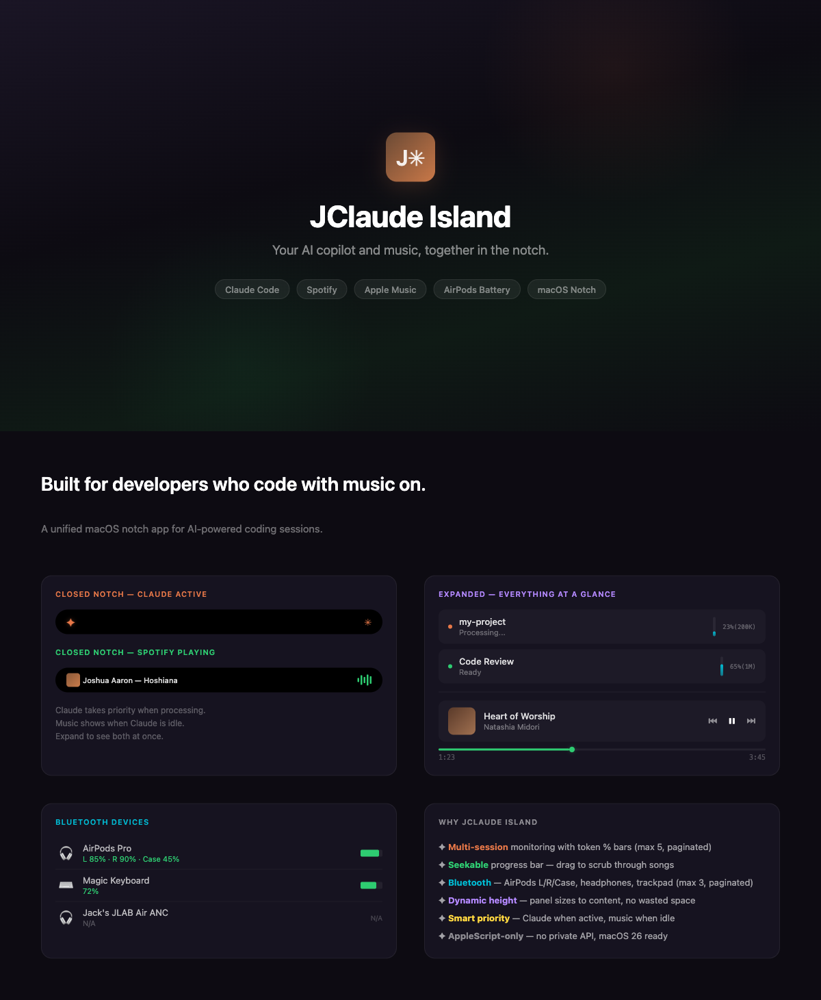

Your AI copilot and music, together in the notch.

Monitor multiple sessions with token usage bars. Approve tool permissions and answer questions directly from the notch.
Spotify and Apple Music controls with seekable progress bar. Album art crossfade on track change. Click to open the app.
AirPods L/R/Case battery breakdown. Headphones, trackpad, keyboard support. Brief animation when devices connect.
Claude takes the notch when processing. Music shows when idle. Expand to see everything stacked. Dynamic panel height.
# Download the DMG from GitHub Releases # Or build from source: git clone https://github.com/DKJTR/JClaude-Island.git cd JClaude-Island xcodebuild -scheme ClaudeIsland -configuration Release build \ -destination "platform=macOS,arch=arm64" CODE_SIGN_IDENTITY="-"